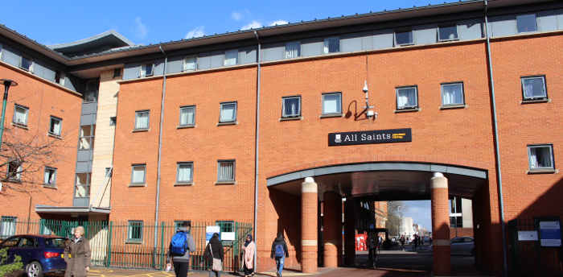
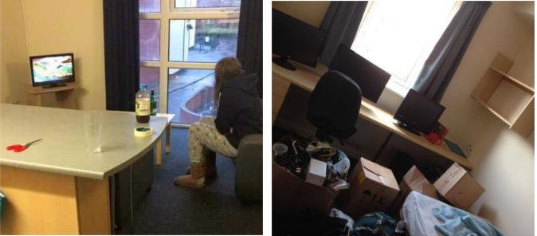
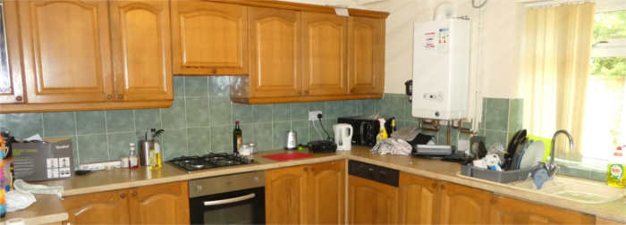

Accommodation in the first year will most likely consist of living in halls, but don't worry if you're not because this site will still have you covered. Halls can be the best and worst times of your life. So let's have a look at whats on offer.
When it comes to deciding which halls of residence you are wanting to live in for the duration of first year. There are a variety of rooms to choose from each coming in different shapes and sizes. It is important to take into consideration factors such as room size, flat size (in terms of the number of people living in the flat), location, money and more. There are a variation of halls of residence that you can choose from each with their own benefits.
Further details on accommodation here:
When studying at MMU, my halls of choice was Cambridge. This was because of the cheap pricing along with the location and the reputation of being very sociable. While I was there, this reputation did not disappoint as I received a warm welcome when moving into a flat with ten people and was able to make a good group of friends from different flats as well as my own. This was a very comforting feeling as it made life fitting into a completely new environment much easier.
However, some may not be as lucky as myself when it comes to people in your flat first year. Rooms are chosen at random and so you’ve essentially not got any idea who is going to be in the flat with you. There may be a clash of personalities between people but that shouldn’t put you off as there are flats and blocks all around you to go and visit and see if there are people who are similar to yourself.
Overall, Cambridge is seen as one of the more popular choices in terms of accommodation due to the location, price and social aspect. I have by the looks of things made lifelong friends from these halls and so there is a potential for you to do the same! I would definitely recommend to take a look through on the open days as well as looking online, just to be safe.
Briarfields was the slightly more expensive option back when I arrived in first year. But the reason it got my vote over the popular Cambridge halls was because it provided an en-suite. I didn’t really fancy using a shared bathroom considering I spend so long in the shower and prefer my independence. I had no regrets about joining briarfields and it was undoubtedly one of the best years of my life.
It has large, tall black metal gates going the whole way around the accommodation, so I always felt very safe. These gates could only be accessed by a key fob given to you at the beginning of the year. It also had private parking, so I would definitely recommend trying to become friends with someone who owns a car for cheap trips to Asda.
In terms of the social life, it was amazing. When it was sunny (very rare occurrence), everyone would socialise in the courtyard area where the two benches would always be filled with fellow students chatting away.
This bus is everywhere, and you'll know the reason why if you have ever came to Manchester. For only £1, you can jump on a magic bus and it can take you through the busiest parts of the centre of the city. Usually a bus stops every 3-5 minutes down Oxford Road.
One question which often pops up is what bus pass to buy and this all depends where you live and how much you intend to travel. If you don’t go any further from Oxford/Wilmslow road I would highly recommend Magic & Stage coach buses which are the cheapest.
If you intend to travel across the vast land of Manchester, then a GMPTE System 1 pass is worth buying but they do cost about £10 a week.
Manchester has extensive tram systems. Unfortunately, it doesn’t operate in the main university areas.
Trams allow you to travel to places like Bury, Altrincham and Salford. Or if you're an avid Manchester City fan you can get a direct tram from Picadilly to the Etihad Stadium just outside the city.
There are so many train stations around Manchester. A railcard would be the best advice the students can give for travelling, espescially if you live far away.
A railcard will save you 33% of all your train journeys around the country, whereever you may go. It only costs £30 per year and is a must buy. If you're hometown is a couple of hours away you will make that £30 back in your first two trips.
When going into first year, you will more than likely be living in accommodated halls. However, on some occasions some first year students may end up living in a house. The essentials needed will be very similar but will however have some differences. Both of them will have their advantages and disadvantages between them. There is a big social aspect living in halls compared to living in a house, however most halls have less living space.
Many students who are living in halls will have fairly small bedrooms due to the amount of students living there as well as yourself. Because of this you will more than likely be limited to what you are able to have in your room. Below are the main essentials needed for when living in this tightly spaced rooms as well as extra bits and bobs you may decide to bring with you as you start this adventure.

When going into your accommodation, you will be provided with a bare bed and mattress. Therefore, you will need to bring bedding and pillows if you’re wanting a comfortable night’s sleep. Most accommodation will only have single beds but some may be lucky enough to have bagged themselves a double bed. Either way it’s worth bringing a double bedded quilt. You will most likely need it for second year as most houses have double beds, but it’s also better for them cold winter mornings.
If you want to eat properly then cooking equipment is a must if you’re wanting to stir up a tasty meal (that’s if you can actually cook). A few plates and bowls along with the same amount of cutlery should be enough. It also advised that they’re microwavable as it can make life easier when wanting to cook a quick and easy meal. Cups and mugs for drinks as well as your morning cuppa. Pots and pans will be needed and a few different sizes is recommended.
You’ll need these if you want to stay fresh and clean and keep on top of your personal hygiene. Shower appliances such as shampoo, shower gel, conditioner and towels will be essential to this. Bathroom essentials such as toothbrush/paste and toilet roll will also certainly be needed. For boys, razors and shaving foam. If you don’t have a beard now, the chances are you will probably end up growing a bit of a nasty moustache towards the end of university so these are recommended. For girls, face wash, body scrub, conditioner, and all the other girly things you’re likely to use.
Well you’ll need a few of them both big and small. A smaller bag for short journeys around the city and to carry your university equipment in. They can also be great for a trip to the shops if you don’t fancy spending 5p on a carrier bag (a complete rip off). Biggers ones however are needed if you want to go home or travel to a different city to visit friends. Chances are you’ll want your mum to wash your clothes when you go home, so a bigger bag can help with that.
When coming to university, it is very important to ensure that you have enough money to live on during your time at university as you are no longer living under your parent’s roof and you have to start learning how to take care of yourself independently. This means spending your money wisely to ensure you don’t run out and can afford to feed yourself. Oh, and those nights’ outs you’ll regret missing out on if you don’t have the money.
When applying for university, your main form of finance will come from the government as part of your student finance. This will pay your tuition fees which you don’t even see as well as your maintenance loan. The size of the loan depends on your parent’s income for the financial tax year, two years before you start your degree. The smaller the loan, the higher your parent’s income and the larger the loan, the lower your parent’s income. This is because the government feels as though if your parents have a higher income then they should be able to help you financially if you get in trouble. However, there are those students who are unlucky enough to be given a smaller loan due to parental income, however, the families have large bills and mortgages to pay off meaning they cannot help their child financially.
When coming to university it is important to take these into consideration. If you have a large loan then you may not think about employment over the duration of your degree. However, there are those who will need the extra financial support and so it could be a great idea to look for jobs before starting university to give you a better possible chance.
There is an employment office within the university which helps students look for employment both on and off campus and so there is always a chance for people to find potential jobs. The university itself has jobs available to students such as working on open days and within the union itself. They are well-paid jobs helping the students earn enough money to help survive the hectic student lifestyle. As well as these, there are job opportunities all across Manchester available throughout the year and depending on what you’re into, some are more appealing than others.
If you are seriously struggling for money and don’t know where else to turn, then there is an advisors office within the student union with staff who are happy to help you in any way they can. If you feel as though there are problems with your loan or you are struggling financially then they can try to help in the sense of enquiries, investigations and guidance with certain money issues.